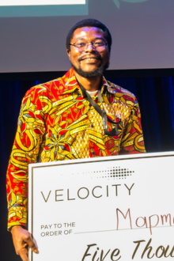
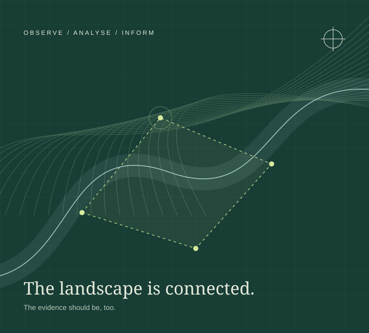
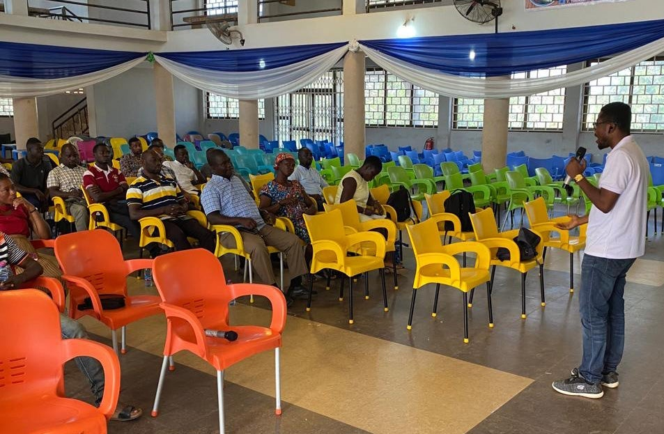

Climate risk · 2024–present
From flood documents to spatial evidence
Workflows that organize flood-protection standards, infrastructure locations and source references into structured tables and spatial outputs.
Geospatial researcher · PhD candidate
Kwaku Owusu Twum
I combine spatial analysis, environmental governance and digital tools to support conservation, climate risk and sustainable food systems.


01 / Selected work
Projects that connect environmental observations, the quality of evidence and the decisions people need to make.
Workflows that organize flood-protection standards, infrastructure locations and source references into structured tables and spatial outputs.
Geospatial monitoring and sustainability data systems for cocoa sourcing, supported by data quality checks and reporting across operational teams.
A team-developed platform connecting farm profiles, mapping, operational records and communication for farmers and agricultural organizations.
Research on conservation easements, other effective area-based conservation measures and landowner participation across Canadian working landscapes.
How I work
Technical analysis is one part of the task. I also consider the source of evidence, its limits and the institutions and people involved.
Clarify the environmental problem, the decision it informs and the people who need to use the findings.
Combine GIS, Earth observation, statistics and qualitative research with careful source and data management.
Develop maps, tools, research outputs and policy writing that communicate findings and uncertainty clearly.
02 / Research & writing
Selected publications and policy reports on environmental change, conservation and agricultural governance.
African Geographical Review · First author
Rangeland Ecology & Management · Co-author
FACETS · Co-author
Canadian Agri-Food Policy Institute · Co-author
Canadian Agri-Food Policy Institute · Author
My dissertation examines digital agriculture in Canadian working landscapes: how technologies become part of farming, what ecological changes become visible, and the conditions needed to connect information with sustainability decisions.
03 / About
I’m a geospatial researcher and PhD candidate in Sustainability Management at the University of Waterloo.
My work moves between Canadian conservation research, flood-risk evidence and agricultural data systems in Ghana. I combine GIS and Earth observation with statistical analysis, institutional research and the development of practical digital tools.
I also co-founded Mapkot Technologies. Working with a product team and agricultural users informs how I think about implementation: who needs the information, what makes it trustworthy and what it takes to use it.
Download my CV
Education
Methods & tools
ArcGIS Pro · QGIS · Google Earth Engine · Remote sensing · Land-cover monitoring · Spatial data quality
Python · R · SPSS · Survey research · Directed content analysis · Evidence synthesis · Policy and institutional analysis
Geospatial product development · Technical documentation · Maps and visualizations · Policy writing · Research communication
Selected experience
Climate Risk Research Group, University of Waterloo
University of Waterloo · Conservation, digital agriculture and environmental governance
Mapkot Technologies · Product strategy, geospatial analytics and partnerships
Canadian Agri-Food Policy Institute · Policy research and writing
Koa, Ghana and Switzerland · Environmental monitoring and sustainability data systems
KNUST, Ghana · GIS instruction and analytical research support
04 / Contact
I welcome research collaborations and opportunities in conservation GIS, environmental data analysis, climate risk and geospatial product development.
kotwum@uwaterloo.ca